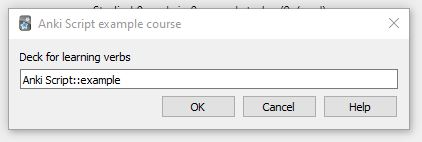
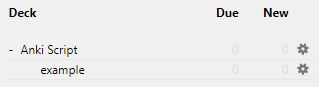
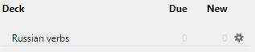

Within scripts all directory, deck, and note type names are always referenced via aliases. When a user runs a script, eg. by
installing an addon built using Anki Script, or by adding lesson content , a dialog is displayed to the user
permitting them to override a default alias value specified in the script.
This provides a mechanism for users to names decks and cards as they wish, whilst still being able to use a domain specific/course
addon:
...

So for instance, if a script has the commands:
set verbs alias, asking 'Deck for learning verbs', with default 'Anki Script::example'
create deck verbs

and they will see the following new deck if they accept the default value:

However, if they override the default value in the dialog, for example:
they will see the following new deck:

but the script will always refer to the deck as
verbs, even in future commands.
An alias for the default deck is required, and should be set as part of the domain specific/course addon setup using the command:
set default alias, asking 'Default deck', with default 'Default'